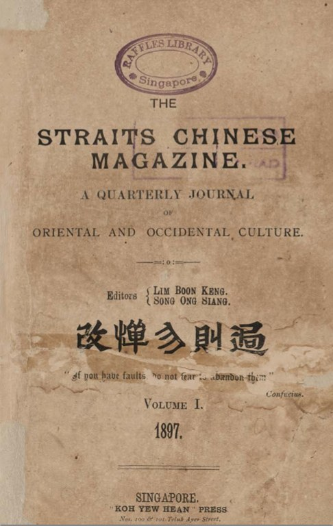

Adeline Koh, “Digitizing Chinese Englishmen: Notes towards a Postcolonial Digital Archive”

Adeline Koh is Director of DH@Stockton and and assistant professor of literature at Richard Stockton College. Her work spans the intersections between postcolonial studies and the digital humanities, 19th/20th Century British and Anglophone Literature and Southeast Asian and African studies, and games in higher education. Koh directs Digitizing 'Chinese Englishmen,' a digital archival project on 19th century 'Asian Victorians' in Southeast Asia, and The Stockton Postcolonial Studies Project , an online magazine of postcolonial studies. She is the designer of Trading Races, an elaborate historical role playing game designed to teach race consciousness in the undergraduate classroom, and runs the postcolonial digital humanities website and tumblr blog with Roopika Risam. She is also a core contributor to the Profhacker Column at the Chronicle of Higher Education. She has held a Duke University Humanities Writ Large Fellowship and a postdoctoral fellowship at the National University of Singapore. Find out more about her research on her academia.edu profile.
Adeline Koh (Richard Stockton College)
Saturday, September 28, 2013
Adeline Koh, “Digitizing Chinese Englishmen: Notes towards a Postcolonial Digital Archive”
In this talk, Koh will discuss Digitizing Chinese Englishmen, a digital project that documents the creation of a group of “Asian Victorians” during the nineteenth century within the British Empire in Southeast Asia. While literary digital scholarship on the nineteenth century has proliferated in the past ten years, few projects that focus on the influence of Empire on Victorian culture currently exist. Digitizing Chinese Englishmen addresses this gap in an attempt to create a “postcolonial” digital archive in content and form: firstly, by digitizingThe Straits Chinese Magazine, a nineteenth-century journal of Anglophone writing in Southeast Asia, and secondly, through features which allow site visitors to play a larger role in shaping the meanings of this archive via social media and their comments. In so doing,Digitizing Chinese Englishmen attempts to address a larger debate on silences on race, class, gender and access within the digital humanities community through its recovery of overlooked texts, and by adopting an approach to display that is self-reflexive of the process of imperial knowledge creation within the digital archive. This talk will document the ways in which Digitizing Chinese Englishmen undertakes this through describing certain scholarly gaps within the digital humanities community and Victorian studies, explaining how this project tries to address these gaps, and finally explaining some of the challenges involved in this recovery project.